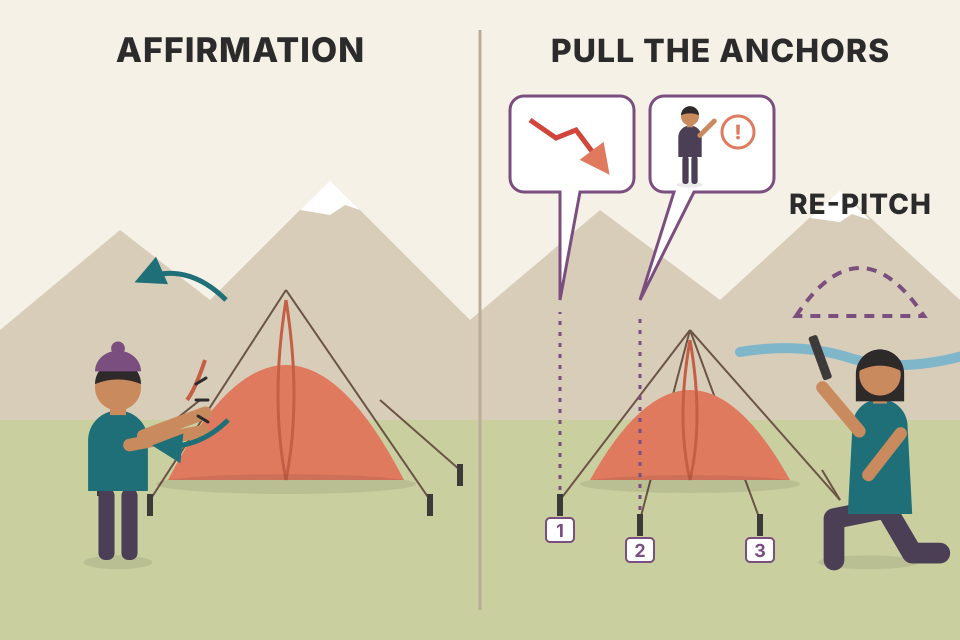
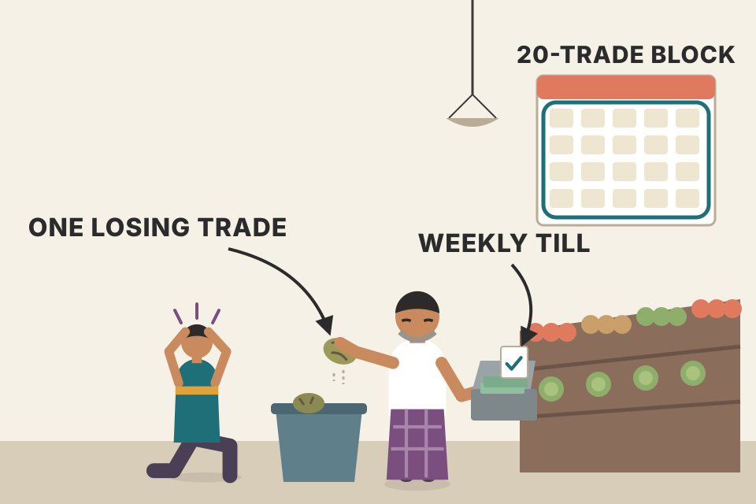
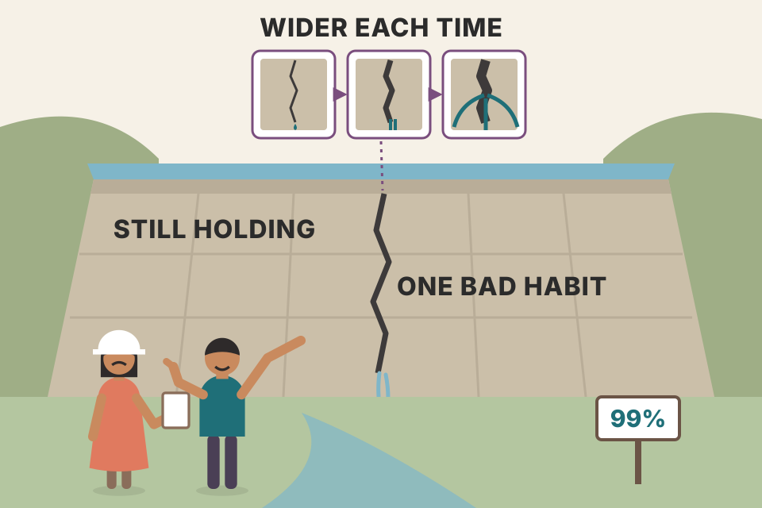
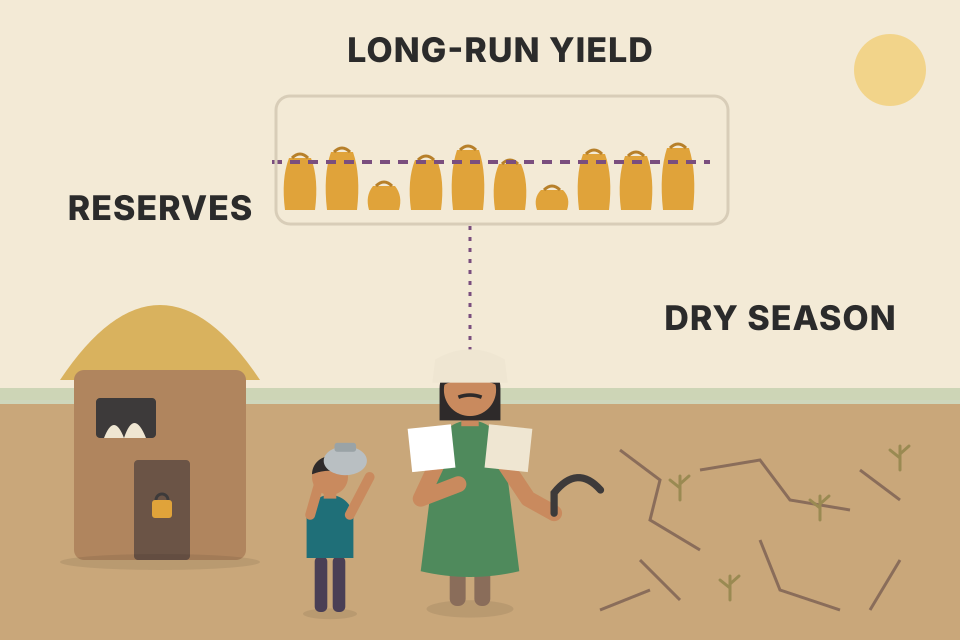

You know the rules. You tested them. Then a trade goes against you, and you break them anyway. Module 9 is about that gap between knowing and doing. Grimes adds one warning: a calm mind cannot save rules that do not work. All 3 exercises and 20 essays are here. Every chart uses simulated data, never real market results.
Meet Ravi. He is an engineer who trades after work. He tested one setup on old charts for months, and it made money. So he starts trading it with real rupees.
Week one goes well. In week two he loses three times in a row. His face gets hot. He doubles his size to win the money back, and loses again. The next day a clean signal shows up. He is too scared to take it. It would have been his best trade of the month.
The setup did not fail. Ravi did. He knew exactly what to do, and he did not do it. This chapter is about that gap.
Grimes fills it with small, practical tools. You list your strengths and fears. You dig out the beliefs that hold you back. You learn to treat a loss as a shop treats spoiled vegetables: a normal cost. You write a letter to open on your worst days. And you grade yourself on one question: did I follow my plan?
But he adds a warning, and repeats it often. All of this helps only if your rules really make money. Ravi tested his. Many traders never do. They blame their nerves for losses that their method causes. So the order is: first make sure the method works, then work on yourself.
| Word | What it means, in plain words |
|---|---|
| Edge | A real advantage that repeats. Over many trades, you make more money than you lose. |
| Stop | The price where you give up and get out. You pick it before you enter. |
| R | The money you planned to lose if the stop is hit. A win of 2R made twice that amount. |
| Win rate | The share of your trades that make money. 45% means 45 winners in 100 trades. |
| Expectancy | The average you win or lose per trade, over many trades. It is also called expected value. |
| Position size | How much you buy or sell on one trade. Bigger size means bigger wins and bigger losses. |
| Trading plan | Your written rules: what you trade, when you get in, when you get out, and how much you risk. |
| Discipline | Doing what your plan says, every time, also when you do not feel like it. |
| Limiting belief | Something you hold to be true that quietly holds you back. "A loss means I am stupid" is one. |
| Revenge trading and tilt | Angry trades made to win back a loss. Being "on tilt" means anger is now doing your trading. |
| Pattern interrupt | A small act that breaks a bad habit as it starts. A short walk is the classic one. |
| Tail risk | The small chance of a rare, very large loss, like a sudden crash. |
Sections 02 to 04 are three exercises you do on paper. Section 05 is the reading list. Sections 06 to 25 are Grimes' essays, one per section. Short on time? Read section 06, section 13 and section 19 first.
Ravi is my example, not Grimes'. The tools and the warning are his.
The module has two halves. First come 3 exercises and a reading list. Then come Grimes' blog essays, in 5 groups.
One chain of logic ties them together. You need an edge, which is a real advantage that repeats. But an edge is only numbers on paper. Your actions turn it into money.
And your actions come from your beliefs, your emotions and your habits. You can learn to see all three, and to change them. Each row below is one part of that work.
You might think the mind stuff sits at the back of the book because it matters least. Grimes opens by saying the opposite. Psychology is not an afterthought.
In the first version of his course, every module had its own psychology unit. So the topic ran through the whole course. The 2017 revision moved most of those units into this last module. That was one of its biggest changes. He gives two reasons.
One more thing changes in this module. The readings are longer. They are Grimes' own blog posts, picked with care over the years.
He asks you to read them closely. They hold hints and directions that appear nowhere else in the course.
So what do you do with this? Do not rush this module to "finish" the course. Treat it as work that carries on, at your own pace, long after the last page.
Learning to drive. The rules of the road and car control can be taught in a set order over a few weeks. Staying calm when someone cuts you off on a highway cannot be put on a timetable. Some people get there in a month. Some take years.
Grimes stopped forcing the two to march together. Where the picture breaks: a driving school ends with a licence. This inner work has no final test and no end date.
The two kinds of learning are different. Pattern knowledge is something you can check. You run a test, and it shows an edge or it does not. An edge is a real advantage that repeats over many trades.
Inner change is about habits and emotional reactions. Reading does not change those. Repeating and time do.
So the two need different clocks. The revision gives each its own.
Think of someone who rates himself far too highly. Easy, right? Now think of someone who should trust herself much more. Also easy. We spot this in other people at once.
Seeing it in ourselves is the hard part. Introspection means looking inside yourself, and Grimes admits it is not easy. We spend much of our lives lying to ourselves. Some of that lying even helps us. But it means we easily make too much or too little of our strengths and weaknesses.
A fair, accurate view of your own strengths, weaknesses and potential is not normal. Getting one is the goal of this exercise.
There is no right or wrong way. These ideas work for other people. Change them and add to them freely.
Spend real time on the lists, and come back to them every day for a week. At the end of the week, edit the list and sort it into categories.
Then think about it, and let it grow for another week or two. Bring your full attention back to it several times each day, even if only for a few minutes.
Talk to people from different parts of your life: friends, coworkers, family members. Each group sees a different side of you. Use their views to spark your own thinking. Do not let them replace it.
Grimes calls this an important part of knowing yourself. Once you see your motivations, strengths and weaknesses more clearly, you can shape yourself into the person you want to be.
One rule for the whole exercise: be honest. Not brutal, not cruel. Fair. The goal is to see clearly and accurately.
A photographer developing film. The first print (day 1) is murky. Each day you return to it, the image gets a little sharper. You do not get a clear picture by staring hard once. You get it by coming back again and again over weeks.
Where the picture breaks: a photo stops changing once it is developed. You keep changing, so this picture is never quite finished.
Why a week, and not one long evening? Because one sitting catches only what is on your mind that day. And that depends on your mood.
Come back daily and you meet yourself in many moods. After a win. After a loss. Tired. Rested. The list then evens out the noise of any single day.
The editing at the end of the week has its own job. It turns raw notes into groups you can act on. And other people catch the blind spots you cannot see from the inside.
The book gives the steps. These reasons for them are my reading.
Imagine a trader who believes "money is dirty". He may never say it aloud. But think what it does. Every time a trade starts to make money, part of him pulls back. That one belief can limit everything he does in the market.
That is Grimes' example of a limiting belief: something you hold to be true that holds you back. The opposite is an empowering belief, one that helps you. His example is "I live in a universe of abundance", meaning there is plenty for everyone.
Do not start this exercise until two others are done. One is the Belief Inventory from the previous module. The other is the introspection in section 02. Both take a lot of time to do well.
Then you can turn to understanding your beliefs and motivations better. You also start turning some limiting beliefs into useful, empowering ones.
Take your work from both projects and look only at the beliefs. The book names two ways to sort them, and then adds a mark for importance. That gives you three scales:
Build a system that makes sense to you. You will need to trust your intuition here. You may well need to come back to the sorting several times.
Grimes says it took him only a few paragraphs to explain a deeply important exercise. Do it well, and you understand much better who you are and why you are that way. You may even see how to grow into the person you want to be.
Now try it. The map below already holds a few beliefs. Add your own.
A garden survey before you start weeding. You do not pull plants at random. First you map what is there. How deep does each root go? That is certainty. How much ground does it cover? That is importance.
The weeds with deep roots in the middle of the bed are the ones to plan for. Where the picture breaks: a weed is always a weed. A belief can limit you in trading and still help you elsewhere.
The three scales tell you two things: where change will be hard, and where it pays.
Take a limiting belief that you hold only weakly. It may fall away once you notice it.
Now take one that you hold with near certainty. It is tied to experiences you treat as proof. Arguing with it does not work. That is why section 04 works on those experiences instead.
Importance tells you which beliefs really touch your trading.
So which do you work on first? I would start with beliefs that are limiting, certain and important, all three. That order is my own reading of the map. The book leaves the system to you.
Two beliefs on the map are Grimes' examples: "money is dirty" and "I live in a universe of abundance". The other examples are mine. I chose them as typical trader beliefs.
Nothing is stored. The map resets when you reload the page.
Try a small experiment. Stand in front of a wall and say, with feeling, "I can walk through walls". Say it every morning for a month. Then walk at the wall.
You know how this ends. That is Grimes' own silly example, and it carries the main idea of this section. A belief does not change because you shout a new one over it.
He calls this part "the fun stuff". Here you change the beliefs that have held you back and kept you from your potential.
This work gains a lot from an outside view. A coach can be especially good. A friend, a therapist or a counsellor can help too. It is often much easier to see another person's limits than your own.
You can make great progress alone, and the work you have done so far is a solid base. You might use your journal or your self-talk for it. But do not be afraid of outside help. Even a few sessions with someone used to this work can change your life.
Your beliefs are the total of all your learning, thinking and life experience. Many have been confirmed again and again. They are part of the fabric of your reality.
But some of them are not true. Some of the untrue ones do not matter. Some are harmful. Do you want different results from the world? Then changing your beliefs is one of the best ways to get them.
A positive affirmation works like this. You write down a new belief. You say it every day, perhaps with strong emotion, perhaps while looking in a mirror. Grimes says this is not usually very effective.
Here is why. We hold most beliefs because they are tied to what we see as real. Try to change one by force, and the mind rebels. Think of the wall again. Every wall you meet confirms the old belief, however you word the new one.
He is fair about it. There is no one right way, and for some people affirmations may work very well.
Step 5 has a neat trick in it. You know that some people do not share your belief. Imagine seeing through the eyes of one of them. How would that person read the same evidence?
Do this work with intention. That means with responsibility, care and love for yourself. You will likely see some paths open. Working through the steps shows you the belief from another side, so you can question its foundations.
In many cases you can then choose to replace it with something more constructive. And here, at last, affirmation-style reminders may have a place. They can help you see the world through new eyes.
Grimes says this is only the very surface. If it interests you, more sources are easy to find. His closing line: change your beliefs, and you change your world and yourself.

A tent pegged down by guy ropes. Push on the tent and it springs back. That is the affirmation. Now pull the pegs one by one. Those are the anchors in step 3. Check what each peg was holding up. That is step 4.
Then the tent can be moved and pitched somewhere better. Where the picture breaks: you can see every peg of a tent. The anchors of a belief are hidden, and finding them is most of the work.
Think of a belief as a summary. Your mind wrote it after looking at the evidence.
Now try to force in a new summary while the evidence stays the same. It fails. The evidence keeps "proving" the old one.
The framework goes back to the evidence itself. Maybe you see that an anchor was misread. Maybe the belief protects you from something that is no longer a danger. Then the summary can change, and it changes honestly.
The worked example is mine. It follows an engineer who treats every losing trade as a personal error. I chose it because that belief is common among people from technical jobs.
The steps and their questions are Grimes'.
The module sets one reading from a book. Then come the blog essays.
The book reading is pages 346–374, a part called "trader's mind". It is from Grimes' earlier book, The Art and Science of Technical Analysis: Market Structure, Price Action, and Trading Strategies (Wiley, 2012).
Careful with those page numbers. They are the printed pages of that other book, not of this workbook. That text is not included here.
The essays are printed in this workbook. Each one gets its own section below. This table shows the five groups.
| Group | Essays (section) | The point in one line |
|---|---|---|
| On Psychology | Are beliefs all that matter? (06), Six keys (07), edge and Edge (08), Illusion of control (09) | Get an edge first. Then you are part of the edge. Measure, and do not trust your gut. |
| On Process | Conscious gratitude (10), Being fully present (11), Information diet (12) | Small daily habits change how clearly you see. |
| On Dealing with Loss | Fear of loss (13), Mental trick (14), Land of loss (15), Four steps (16), Vulnerability (17) | One loss is not a risk. Losses are the price of wins. |
| On Discipline | Pattern interrupts (18), Discipline rule (19), Five steps (20), Mental strength (21), The one thing (22), Bias and opinion (23) | Discipline is all or nothing. Only actions count. |
| On Skill Development | Getting worse (24), Patience (25) | Flat stretches feel worse than they are. Limit the damage while you learn. |
A course pack from a good teacher. It has one textbook chapter and a folder of the teacher's own letters. The chapter gives the theory. The letters are the teacher telling you what went wrong and right for him.
Where the picture breaks: this page can only retell the letters. The textbook chapter is in another book, so you would have to get that one yourself.
A reader wrote to Grimes about a friendly fight among her trading friends.
One friend says psychology is all there is. Her line: we do not trade the markets, we trade our beliefs about the markets. Act in line with your beliefs and you will make money.
Another friend says psychology is an excuse to sell courses and books. Anyone who has a system can follow it. The reader asks for a final answer.
Grimes says it is a good question, because any answer will make someone very angry. He cannot give a final one. He can only share what he has seen. He has traded, worked with other traders, and talked to many more, both new and professional.
He also says plainly that he is not a trained mental-health professional. Take his view as a layman's view.
He believes trading psychology often gets too much weight, and that having an edge pays the price. An edge is a real advantage that repeats over many trades.
He bets he knows which books the first friend reads. Those books also say a working system is very easy to find. Have one system for trends and one for sideways markets, and know when to switch. He sees serious, deep problems with that line of thought.
Take "you only trade your beliefs about the market". Grimes could list reasons why it is not true. A believer would answer, "well, that is your belief". So no argument can ever touch it.
A claim like that is called non-falsifiable. It means no evidence could ever show it to be false. Grimes says the claim has an almost religious feel. It promises so much that believers defend it with strong emotion.
"It is all psychology" is the same kind of claim. Nothing anyone could do would make believers stop believing. So the sensible course is to treat such a statement as meaningless.
Grimes urges you to learn this idea if it is new to you. A useful statement must be one that could, in principle, be proved false. He says it will change how you see the universe.
There is a second problem. To say that successful traders trade their beliefs is a tautology. That is a statement that is true by its own wording, so it tells you nothing.
Successful traders do trade their beliefs. And their beliefs fit the way markets work. That is why they are successful.
Telling a beginner the same thing is very different. "Believe something and trade in line with it" is poor advice, because plenty of market beliefs are wrong.
So Grimes would teach beginners how the market works first. He would not put too much weight on psychology early on.
Plenty of traders know what to do and cannot do it. Some have a solid system and cannot carry it out. Some investors do good research and have a good plan. Then the market drops 5%, they panic, and they sell everything.
Knowing is not enough. Some of the hardest parts of trading are about doing what you know is right.
Trading overlaps a lot with top performance in other fields: athletics, chess, music. Grimes himself spent time with a therapist. He saw that he needed better skills to handle the pressure of trading.
To act, you need the strength to bear the stress of markets and to bounce back. So psychology does matter.
There is no single answer. It differs for traders and investors at different stages of the journey.
But Grimes takes a stand, and he knows it is controversial. Many "psychological" problems, maybe most, can be fixed through trading method.
Without an edge, no inner work will stop the money leaking from your account. Maybe you lose money and feel better about it. Maybe you are even happier. You still lose money.
It sounds backwards, he admits. But many problems that look like psychology go away when you trade correctly. That means with an edge, and in line with how markets really behave.
What do you do with this? Before you blame your nerves, check your numbers. The chart below lets you see both halves at once.
A car and a driver. A calm, skilled driver in a car with no engine goes nowhere. That is perfect psychology with no edge. A great engine with a driver who sometimes swerves into a ditch does get somewhere. But slower, and with dents.
You need the engine first, then the driving. Where the picture breaks: you can open a bonnet and see if there is an engine. An edge is invisible. Only many trades and careful counting show it.
First, three words. R is the money you planned to lose on a trade. A loss costs 1R, and a win of 1.6R made 1.6 times that. The win rate, written p, is the share of trades you win. Expectancy, written E, is your average result per trade.
The chart adds a "slip". That is a trade where you break your rules and lose extra. Then:
E = p·W − (1−p)·1 − cost − lapse% × extra loss
Here W is the size of a win, and lapse% is the share of trades with a slip. Better psychology can only shrink the last term.
Say the first part, the edge, is zero or below. Cut your slips to nothing, and you are still at zero or below. That is Grimes' point.
Say the edge is positive. Then slips eat into it. That is the other side of the coin.
The grey line shows a trader with no edge. Its win rate is 1 ÷ (1 + W), which breaks exactly even before costs.
Win rate 45%, wins of 1.6R, losses of 1R, cost 0.05R a trade. Then E = 0.45 × 1.6 − 0.55 − 0.05 = +0.12R.
Now add slips on 5% of trades, each costing 2R extra. E = 0.12 − 0.05 × 2 = +0.02R. Almost all of the edge is gone.
Over 300 trades that is about +36R against +6R.
Now take a trader with no edge. With 1.6R wins, that is a win rate of 38.5%. Perfect discipline gives 0 − 0.05 = −0.05R a trade. That is −15R over 300 trades, lost very calmly.
The simulation is mine. So are its cost of 0.05R per trade and its "slip" model.
Each path is a string of simulated coin flips. The lines add up 300 runs. They show the arithmetic. They are not evidence about any real trader.
backtest_results_summary.md has a break-even rule: p* = (L + c)/(W + L). It gives the win rate you need to break even. Every losing run you tested had a win rate below its p*. That is "no edge". No mindset would have fixed it.The internet loves a quick fix. It is full of "you are doing it wrong" posts. They promise to fix everything, from how you tie your shoes to how you drink orange juice. Everyone wants a "hack".
Trading has no hack for the mind. And the problem touches all of us. Every trader can make mistakes driven by psychology. The work is hard. Skip it, and you will lose a lot of money in the market.
Here are the six tools Grimes has found most useful. The list comes first, then each one in detail.
It sounds basic. Yet so many traders start without knowing if they have an edge. There are many ways to find one, but an edge is a precise and delicate thing. If you do not know what your edge is, you do not have one.
Grimes has seen many struggles that looked psychological, his own included. In most cases they were not. They were problems of method. The trader had no edge in that time and that market.
Real psychological problems do exist. Even experienced traders hit roadblocks. But he suspects most come from doing something that does not work.
And one more point. If you trade without an edge, you should feel bad. You are going to lose money.
A trading plan is your written set of rules. You have heard the boring lines before. Have a plan. Plan the trade, trade the plan. Fail to plan, plan to fail. This boring thing is the difference between success and failure.
People want shortcuts. Grimes jokes that he would love to give you a magic hand position. Or a special plant for the corner of your desk. The world does not work like that.
With a good plan, your job is to follow it. When you judge your own actions, you need only one question: did I follow the plan?
"Does the plan work?" is a different question. Ask it and answer it separately. For that one, go back to key 1.
The trading plan in key 2 is like a business plan. This one is smaller. It is a note for each trade.
A swing trader holds trades for days or weeks. He can write down three things for each trade he enters. They are the first stop, the target, and perhaps some rules for managing the trade. A stop is the price where you give up and get out.
The notes need not be long or formal. Scrap paper is fine. The act of writing gets the ideas out of your head and into the real world.
A daytrader closes every trade the same day. Notes per trade are not practical for him. He still needs a guide for each trading day:
If those questions do not fit your style, find the ones that do.
Grimes has written about this at length elsewhere. Keeping a journal of some kind may be the single most important thing in your growth as a trader.
Everything can be worked on through it over time. Problems with placing trades. Building your method. Psychological problems.
He is blunt here. You are probably not doing it. And you probably will not succeed until you start.
Easier said than done. But spend time on who you are when you face risk, money, hard work and uncertainty. A trader meets all of these, and more.
Ask also which skills you still need. A better grasp of probability? Deeper knowledge of financial markets? Some specific way of analysing?
There are many roads to knowing yourself. Some people talk to a therapist. Some go on long walkabouts. Some keep a journal and reflect. Some work on it in the quiet moments of each day.
No way is wrong. The process probably matters more than anything. The market will make you face the best and the worst in yourself, so get a head start.
If you wanted one short technique, this may be it. A pattern interrupt means you notice that you are about to do something dumb or emotional. Then you break the pattern.
There are many ways to break it. Go for a walk. Make a phone call. Go to the gym. Stop trading for a few days. Snap a rubber band on your wrist.
The key is awareness. First you must notice your own mental and emotional state. Then you break the bad cycle.
Take an example. You get angry after losses and make emotional trades to get even. That is called revenge trading. These trades are hasty and badly thought out, and over time they lose more money. You want to stop.
First you need a plan. Then you need enough awareness to say: "I am emotional right now. I might make a revenge trade."
Not making that trade may be beyond your strength in that moment. But you can make yourself get up and go outside, can't you? That gives you a grip on your own behaviour, even when you are very emotional.
A chess player reviewing a game. She does not ask "did I win?" first. She asks "was each move sound?" A sound move can still lose to a lucky blunder by the other player. A terrible move can win.
Over hundreds of games, sound moves win. Key 2 is that habit, used in trading. Where the picture breaks: chess has no dice. In trading, luck decides far more of each single result.
The result of one trade is mostly luck. So if you grade yourself on single results, you reward luck and punish good play.
Splitting the review into two questions fixes this. "Did I follow the plan?" has a sure answer for every trade. "Does the plan work?" can only be answered over many trades, by counting.
Look at the grid. One box is the dangerous one: you broke the plan and won. It teaches the wrong lesson. Section 19 explains why.
The grid of 2×2 boxes and the simulation are mine. They illustrate key 2. In the simulation, trades that follow the plan win 45% of the time at 1.6R. Trades that break the plan win 40% of the time at 1R.
Grimes once gave an interview to Abraham Thomas, one of the co-founders of Quandl. He enjoys interviews, because a thoughtful interviewer makes him see things in a new way. This one made him realise something. He had shown his readers only half of what an edge is.
His work is heavily quantitative, which means based on numbers. Perhaps too much so at times, he admits. If he cannot pin down an edge in a tool or a pattern, he will not use it.
That is a choice he makes on purpose. You have to choose which mistake you would sooner make. He would sooner throw out tools that might have been useful than let useless junk creep into his process.
The easy way to explain an edge is with two piles of money. Over a large set of trades you build a pile of money you made and a pile of money you lost. At the end, the first pile must be bigger. You need to make more than you lose.
You can slice this in many ways. One is the trade-off between the win rate and the average size of a win and a loss. The win rate is the share of trades you win. Traders call this the classic expectancy discussion.
You can also use the same sum as a yardstick for raw patterns, indicators or setups. It is important work, and anyone who trades should know how to do it. But it is not the full picture.
Trading is a high-performance activity. It has much in common with professional sport, chess, music, or any field where people try to be as good as possible.
Many such fields are competitive. To stand out from the crowd, you must be better than the crowd. That is plainly true in trading.
In any such field the performer matters hugely. You are perhaps the most important part of your edge. The interview raised five questions.
Not everything must be tidy. But do you have a place and a time where you feel settled for your work? It might even be a noisy coffee shop. Grimes wrote a large part of his book in various Irish pubs, fuelled by Guinness.
Know how and where you work best. Then set things up that way.
Do you walk often, or go to the gym? Move! Does your diet reflect who you are and who you want to be? All things in moderation. But it is hard to imagine top performance on junk food alone.
Do you have lively ties to friends, family and colleagues? Do those relationships add to your life and support you? Do you balance time alone and time with others?
The balance looks very different for different personalities. Both sides matter.
Grimes is very much in favour of obsession. He sees great value in single-minded focus. But at some point it starts to hurt.
You must have a reason to exist outside the markets. You need reminders that life holds much more. Hobbies are good!
Much of this is about balance. It is a quiet call to look after your mental health. At times therapy can help a trader over a rough spot. But there is healing in a sunset too.
This may be the most important question. Define it as you wish. For some people it is tied to religion and deeper meaning. At heart it asks who, what and why you are.
Look at people who achieved great things. Some of those things look plain, like getting through a time of deep hardship. Most of those people had a guiding star, some bigger sense of purpose.
Grimes has come to believe that this sense of purpose is one of the keys to a happy life. What is yours?
The maths is essential. Without a trading edge you can get everything else right and still lose money. Maybe you will feel better about it. You will still lose.
But using that edge needs an Edge: a constructive framework that guides all you do. So Grimes ends with a question. What is your Edge, and what are you doing to take care of yourself?
A Formula 1 team. The design of the car is the small-e edge. You can measure it and test it in the wind tunnel. The driver's sleep, fitness, focus and reasons for racing are the capital-E Edge.
A brilliant car with a worn-out driver loses. A rested driver in a slow car loses too. Where the picture breaks: a racing team has many people. A small trader is the designer, the mechanic and the driver, all at once.
The two piles. Say you take N trades and win a share p of them. The made pile is N × p × average win. The lost pile is N × (1 − p) × average loss. Take the difference and divide by N. That is your edge per trade.
Choosing a mistake. You can only test a tool on a limited number of trades. Such a test can fool you in two ways. It can throw out a tool that really works. Or it can keep a tool that does not, because junk sometimes passes by luck.
Raise the bar and less junk gets in. But you throw out more real edges. Lower the bar and the reverse happens.
Most ideas you could test have no edge. So a loose bar fills your toolbox mostly with junk. Grimes picks the strict side on purpose.
Take 100 trades. 40% are winners that average ₹2,500. 60% are losers that average ₹1,500.
Made pile = 40 × 2,500 = ₹1,00,000. Lost pile = 60 × 1,500 = ₹90,000. The difference is ₹10,000, so the edge is +₹100 a trade.
Now drop the win rate to 37.5%. The piles are equal. There is no edge, even though each win is bigger than each loss.
The "choosing your mistake" simulation is mine. It tests 100 tools. Only 10 have a real edge, of +0.1R a trade. The other 90 have none.
Each trade result is random noise of about ±1R. To be exact, its standard deviation is about 1R. Standard deviation is a measure of how far results usually land from their average. The chart averages 40 runs.
The slider uses a t-stat. It is a score for how sure a test result is. You take the average result and divide it by (standard deviation ÷ √trades). A bigger score means the result is less likely to be luck.
The numbers show the trade-off. They are not Grimes' figures.
trading_equations.md. The made pile and the lost pile are the same equation in another form.Grimes knew a trader who loved moving averages. A moving average is a line on the chart that shows the average price of the last few days. This man used a different mix of moving averages for every stock he tried to trade. He had never made money trading.
Why would anyone do that? Grimes has said many times that simple is good. A method that is too complex has a good chance of not working. Yet many traders feel drawn to complexity. It feels right and good.
One reason may be a quirk of the mind called the illusion of control.
There are many ways to succeed in markets. You can study company fundamentals, which are the business facts behind a share. You can hold a long-term portfolio. You can follow trends in the right kinds of assets. You can trade from charts. You can mix all of these.
But however you succeed, markets are a hard and conflicted place. Making money is hard. Keeping the discipline to do it is hard.
Markets can do almost anything. Yet they spend much of their time doing almost nothing. That lulls you into a dangerous calm.
Because markets are so complex, it is tempting to meet them with a very complex method. Many traders think more is better: more indicators, more tools, more things to tweak. Then they tweak them differently for each stock and each timeframe.
More moving parts often means more ways to lie to yourself. Here is how the illusion works.
Imagine I sit you in front of a screen. I tell you it will flash random numbers. After a while I ask how well you pushed the numbers up or down. You would look at me as if I were a little crazy. You had no effect on them.
Now I give you a button. I even tell you it does nothing. You may press it while you watch the numbers, which are still random.
Afterwards I ask again. This time you would almost surely say you had some success.
You know it is an illusion. Still, being able to do something makes you feel some control over a random situation. Push something, change something, move something. Researchers have repeated this result again and again.
Could the same thing be happening there? You tweak the settings and colours of an indicator, or the layout of your screens. It feels like it must be doing some good.
All humans have poor intuition about random events. That makes it hard to trust your gut. It is also why statistics and reviewing your results matter so much to traders.
Say you trade with no edge at all. You could still honestly feel that a tweak to an entry or a stop made a real difference. Under this illusion you are fully convinced that you control something random. That kind of conviction can be fatal in the market.
Some researchers think there is a good reason we have this illusion. In most parts of life it probably does little harm. If a task is random anyway, going on or stopping makes little difference to your survival.
It may even help. It can keep you at a task long enough to build real skill. Think of a young archer. His early shots are random. But he believes he is improving, so he keeps shooting. In time the skill becomes real.
Trading is different, and more dangerous. Over his career Grimes has become convinced of one thing. Many people do things that make no sense and have no edge. They think they have one. They feel success is around the corner.
Why is that feeling so strong? Probably this illusion. Many traders bash their heads against screens and desks for years. Sometimes that is not only a figure of speech. They get nowhere, because what they do does not work.
They change things. Each small tweak brings new hope and a new feeling of control. The bottom line does not improve. It happens because the trader lacks a solid sense of what matters in trading and what does not.
The answer sounds too easy. Analyse your results with hard statistics. Then understand what the numbers say.
You need proper measures of performance, for live trading and for systems you are still building. And the work must be done correctly.
Building a system gives you endless chances to tweak this and that. You can create an edge that is only an illusion. It will likely fail the first time the system meets live markets.
With proper method and statistics, it is harder to lie to yourself. Statistics are only a tool. But they are a strong one.
The illusion of control is one more quirk of the mind, but an important one. If you think you control your results more than you do, you grow too confident. You make mistakes. You can fall to ruin quickly.
If you respect the limits that probability sets, you respect the market. You stay humble.
It also gives you balance. You are not as good as you think in the good times. You are not as bad as you feel in the rough ones. Both are part of the normal swing of probabilities.
Grimes ends with a wry line. We are all traders in the hands of a market that is angry far too often.
A lift's "close door" button that is not wired to anything. People press it, the doors close a few seconds later, and they are sure it worked. Indicator settings tuned on past data can be that button.
Where the picture breaks: the lift button costs you nothing. A dead button on a trading screen can cost you years and a lot of money.
The second chart uses prices that are pure random walks. Each day's move is a coin toss, so no setting can have a real edge.
For each stock you try 20 lengths of moving average and keep the best. The winner always looks good. But you picked the luckiest of 20 random results. That is selection, not skill.
Two words help here. In-sample is the data you used to choose the setting. Out-of-sample is fresh data you did not touch.
Test the same length on the second half of the data. The luck does not repeat. The average falls to about zero, minus costs.
The more knobs you turn, the bigger the in-sample gap. Only an honest out-of-sample test shows that the button is not wired. That test is the "hard statistics" Grimes asks for.
Set "lengths tried" to 1. The in-sample and out-of-sample results are about the same. Both sit near zero, minus costs.
Set it to 40. The in-sample result jumps, because you picked the best of 40. The out-of-sample result stays near zero or below.
The gap between the bars is the size of your self-deception.
Both demos are mine. The button numbers come from a fixed random generator. In the code, the button does nothing.
The moving-average (MA) test uses 24 simulated random-walk stocks. Each has 500 days of prices. Its volatility, the size of a usual daily move, is 1.5%. It has no drift, which means no built-in lean up or down.
The rule is: be long when the close is above its MA, and hold nothing otherwise. Long means you own the stock. The MA lengths are spread from 5 to 120.
Half the data is for choosing and half for testing. Costs are in bps. One bp is one hundredth of 1%. Results change with the seed button at the top.
backtest_results_summary.md the words are "parameters chosen on earlier data and judged on later data".One morning Grimes wrote that he was thankful for warm socks. Another morning it might have been an especially juicy orange. That is the whole habit: three small lines in a notebook. He says it made a real difference to him, as a trader and as a human being.
He calls it the practice of conscious gratitude, and every word in that name matters.
Sometimes feeling glad is not it. Thinking "things could be a lot worse" is not it. A little prayer of thanks after a narrow escape is not it.
It has the power to change you only if you commit to it every day, as a conscious practice. It need not be elaborate. It need not take even five minutes. But it must become as routine as brushing your teeth or checking your email.
He takes a few deep breaths and invites himself to be fully present in the moment. He works to silence all distractions and all thoughts of the day's tasks. For a few minutes he only exists and takes things in.
That may sound strange and hard to follow. It need not be. There is value in focusing your mind and being fully present, even for one instant a day.
He thinks of them after a few breaths, probably less than a full minute. Do not overthink it. Do not get frustrated. Three things should come easily.
You can repeat things from day to day. Try for new ones, but do not worry if today's line was written before.
Take a few more breaths. Whatever is going on in your world, let yourself truly feel grateful for these three things, even for a moment.
Later, your mind may turn to the book during the day. Or you may forget it until tomorrow. Both are fine. What matters is that you do it, and do it regularly.
Limit yourself to three things each day. Some days you may live the whole day in gratitude, and that would be great. But do not write 15 things in the notebook that day.
Pick three. Do three more tomorrow, and three more the day after. Let the practice become part of who you are.
Grimes offers two guesses. Perhaps you see that you can take control and build a good habit. Perhaps there is something more to it.
His invitation is to try it every day for one month. Carve out a few minutes, focus your mind, and give thanks. The results may surprise you.
A daily commit to a code repository. Each commit is tiny. But the history shows a habit, and the habit is what changes the codebase. Three lines, one date, every day. The streak matters, not any single entry.
Where the picture breaks: a commit changes code you can run and test. This habit changes you, slowly, in ways no test can show.
A small ritual that never changes is easy to repeat. So it really does happen every day.
Writing pulls your attention to things that went right. A trader's mind leans toward threats and losses, so this balances it.
The limit of three keeps the habit light. A light habit survives bad days.
Those three reasons are my reading. Grimes offers two of his own. One is proof to yourself that you can build a good habit. The other is that there may be something more.
The third example line and the 30-day tracker are mine. The tracker remembers your ticks in this browser only, if storage is allowed. Nothing leaves your device.
Three people on a subway train watch a person with a dog. One thinks fondly of an old pet. One has a phobia of dogs. One remembers a film she saw last night. Almost nobody is "just seeing a dog".
That is Grimes' picture of how we take in the world. What you think you see is not what you see. What you think is happening is not what is happening. Everything passes through your inner talk and your past experience.
Too many writers treat this normal way of seeing as bad. Grimes does not. We have survived as a species for a long time with it, so it cannot be all that bad.
In many ways it is very good. It builds more links between the bits of data in your brain. It makes us smart.
But it also keeps us closed off from another level of experience. There is a way to get a very different view, and to bring other strengths of your mind to every situation.
He calls this other way "being in the moment". He warns you to be careful with the word mindfulness. People often use it for this kind of work. But it really means a specific set of meditation techniques. It is not a way to sit at your desk and answer emails.
For a trader, being in the moment is a strong place to stand. You see clearly. You are free of emotional baggage and past mistakes. You are free to be your strongest and most successful self.
Getting there takes two things. First, a clear intent: you have to want to be more in the moment. Second, attention and a gentle patience, to bring your mind back when it wanders.
In a way, this stretches meditation into your everyday life. Here are five ways to do it.
Working with intent focuses the force of your will. You get things done that might have seemed impossible.
Grimes calls the daily list one of the best pieces of time-management advice. When something goes on that list, you get it done, no matter what. Putting it there declares a clear intent for the day.
You might also keep a longer list of projects that need days, weeks or months. But start with the daily list. If you do nothing else, do this.
Do one when you sit down at your desk. Do one when you leave the house and when you return. Do one when you eat.
Eating with awareness has its own force. Take a few moments to thank the fish, animal or plant. It is no longer what it was, so that you can eat.
It may sound soft. It is also an invitation to understand where we stand in the dance that is life.
For traders, the flood of emotions can be too much. Notice the self-talk, and the natural pull to think "I am ___". Then gently correct it. This is one way to get real clarity and perspective.
Close your eyes. Bring all of your attention to your breathing, in and out, for the next three breaths. That is all. It takes maybe half a minute.
Do not change how you breathe. Do not try to think anything. Do this a few times a day, and you begin to interrupt the autopilot of everyday life.
The list could go on, but these will get you started. The key idea is to shake things up only enough to get a new view. Small things work, and they go a long way.
A camera lens with smudges on it. Each smudge is a memory: the last loss, a similar chart that failed, a headline from this morning. Being present is wiping the lens before you look at the chart. Then you see this market, today.
Where the picture breaks: a clean lens stays clean for a while. The mind smudges again in minutes, so you wipe it many times a day.
Something happens, and you react at once. Each step here puts a small gap between the two.
Intent and a short list decide early what matters today. So the mood of the moment has less say.
Rituals and breathing pull your attention to the present.
And the change from "I am angry" to "I am feeling angry" is bigger than it looks. The first is who you are. The second is a passing state that you can watch. A state you watch is easier to wait out.
This account of why the steps work is my reading, not the book's.
The rewording tool is a small text rule I wrote. It changes "I am X" or "I'm X" into "I notice I'm feeling X". It also flags labels you put on yourself, like "idiot". It is not from the book.
A few years ago a developing trader said something that stuck in Grimes' mind. He had to be careful which websites he read, because negativity can be dangerous. When you live in constant fear, it colours everything you see.
You are what you eat. And what you read. And what you think about.
Grimes thinks it goes even deeper. Negativity and fear change how you see, deeply. When you take in information wrapped in emotion, you create blind spots for yourself.
Let in too much emotion, and too much emotional spill from other people, and you cannot see or think rationally. The emotional setting changes how you think, and how you can think.
Start with the big media. They are not perfectly neutral. Anyone who works in media wants to hold an audience. Grimes counts himself in, because he is a blogger too.
They all know that emotion brings clicks, shares and reads. They also know that negative emotion travels much further than positive.
So news stories come in an emotional wrapper, with a headline built to provoke. Your brain takes in the emotion along with the facts.
Then there are blogs, newsletters and sources that are biased on purpose. Some of the most popular sites on the internet serve a huge dose of emotion. Fear and hate provoke people, hold them, and build a loyal core audience very well.
Take a few moments today. Ask which sites and sources you read regularly, and how much emotion is baked into each. Grimes names no sites or authors. He thinks you can read between the lines.
For traders, he lists four things to watch for:
Some forums also hold a healthy dose of good work. It comes from traders who are set on figuring out the game or on helping others. Be sure you can separate the wheat from the chaff.
Grimes has been in these forums since they were mailing lists. He finds the anger of failed traders astounding. They are certain the system is rigged. They throw abuse at anyone and everyone, like a monkey throwing dung at the zoo.
You can hang out there. But duck.
Basic fact-checking takes less than a minute. Do it before you share a story, and before you get upset about it.
If you read these writers, you are probably hurting yourself. Some have built businesses worth many millions of dollars by playing on public emotion.
They have predicted THE END for decades, and they have been wrong. They will go on being wrong. The harm they have done to their readers is almost beyond measure.
If you read anyone like this, think carefully about what your world would be like without them.
Is there a constant flood of posts predicting crashes? Posts on why the system is rigged? Posts that find great meaning in hidden data points?
Is everything blamed on HFTs? Those are high-frequency traders, firms whose computers trade in tiny fractions of a second. All of this brings clicks and shares. It does not help you as a trader or investor.
Once you have looked hard at what you take in, you can decide what to do about it. Grimes suggests an information diet. It has two steps.
What if you get sucked into hours of clicking and sharing emotional, negative articles? First, congratulate the blog owner on building a blog that hooks people. Then step away and think again.
You can take in information. But be careful about the emotion that comes with it.
Food that comes pre-salted. You can eat the vegetables you need, but you also take in salt you did not choose. News comes loaded with emotion in the same way. You can take the facts, but your mood soaks up the fear whether you want it or not.
Where the picture breaks: a food label tells you how much salt is inside. No headline tells you how much fear it carries.
Publishers are paid for attention. Fear and anger hold attention best. So the feed leans toward them.
Fear, repeated daily, trains you to see danger in neutral data. In your trading it shows up as hesitation, early exits, or "the system is rigged" thinking.
The one-week cut is a clean starting line. With the input gone, you can see how much of your mood it was causing.
Adding sources back one at a time tells you which ones did it.
The source types and their starting scores are my examples. Set them to match your own reading.
The tool orders the add-back by "useful minus emotion". That order is my suggestion. Grimes only says to add back slowly while watching your emotional state.
Early in his career, Grimes would put on a trade and his palms would sweat. His heart would race. He took a bathroom break every five minutes.
Every new trader knows these feelings. That much emotion drowned out whatever clear analysis he could do. It soon became obvious that he would not succeed until he learned to manage it.
People talk about "learning how to lose" and "losing gracefully". Grimes always had trouble with that idea. He is very competitive in most things, and a terrible loser. He hates to lose.
But trading is different. In trading he is a great loser. He has built the skill on purpose.
It came when he understood one thing about risk and loss. He says it may be the single most important thing he knows about trading psychology.
There are risks in trading that should worry you. The chance that your next trade loses is not one of them. In fact, it is not really a risk at all.
Think of the trade you put on a minute ago. It might be in Apple, Facebook, the euro, gold or the crush spread. The crush spread is a trade between soybeans and the oil and meal made from them.
Will it win, lose or break even? You should not even be thinking about that. The best state of mind is to not care about the result of any one trade.
Why? Your results are the sum of your wins and your losses. And you are certainly going to have losses. Trying to avoid them is very dangerous. You must accept them and welcome them.
Picture a grocer whose shop is doing well. His business works, like a trader with an edge. He does not agonise over buying stock. He does not agonise that some share of his lettuce will spoil before it sells.
That is a cost of doing business. Without lettuce he would have no profit. Some of it he sells, and some of it spoils.
Your losses are your cost of doing business. You cannot have profits without them.
So learn to think over the next 20 trades, not the next one. Do not hang too much on any single result.
One day he put on a position and asked himself what he thought would happen. The honest answer was: "I really don't care". That was the day he knew trading had changed for him.
You have to be able to not care. That does not make you careless. You still do the hard work of trading. You stay perfectly disciplined. You manage all the other risks. About those you must care deeply.
It also goes beyond understanding the words. Grimes can point you toward the idea. You can read it here and follow it. But you have to take the lesson into a deeper part of yourself, and that takes time.
If you truly understand loss, you can accept it. You can make it part of who you are, and use it to succeed.

The grocer's lettuce. Some heads spoil every week. He does not stand over the bin in despair. He watches the till at the end of the week. A losing trade is a spoiled lettuce. The block of 20 trades is the week's till.
Where the picture breaks: a grocer can see lettuce going bad and sell it cheap. You cannot see which trade will lose before you take it.
Take one trade with a 51.5% win rate. A loss comes almost half the time. That is a normal result, not a danger.
Now add more trades. Each trade adds its small edge to the total. Luck adds to the total too, but more slowly. Call the number of trades n. In maths words, the edge grows like n and the spread from luck grows like √n.
So the bigger the block, the higher the chance that the whole block makes money.
Fear aimed at one trade is fear aimed at noise. The risks on Grimes' list are different: size, tails, discipline, no edge. They change the whole block, not one trade.
Take your daily trendline Break setup. It has 51.5% winners, a 2R target and a 0.1R cost.
The next trade has a 48.5% chance of a loss.
Now the next 20 trades. The chance of at least one loss is ≈ 100%. The chance of a run of 4 or more losses in a row is ≈ 44%.
But the block makes money if it has 8+ winners. That happens about 90% of the time. The average result is +8.9R, which is 20 × 0.445R.
These odds are exact maths, not a simulation. They use the binomial formula, which gives the chance of each count of winners. A fixed cost of 0.1R a trade is included.
The 51.5%, 2R and 0.1R inputs come from your note. Grimes gives no numbers here.
using_equations_to_trade.md runs a sizing Monte Carlo on that same setup: 51.5%, 2R, 0.1R cost. A Monte Carlo is many random pretend runs.You bought ten minutes ago, after hours of analysis. Now the price is falling. A small voice says, "it will come back". Sound familiar?
Traders can be stubborn. It happens to everyone, and no one is ever immune. Pulling the trigger takes a lot of confidence. Often much analysis and hard work went into the trade.
So what happens when information shows up that goes against the trade? Sometimes the shock of seeing that the trade is wrong makes a trader freeze. The results can be disastrous. Or the trader cannot take the new information in at all.
Grimes shares a small trick in thinking. It made a big difference in his own trading. It may look trivial, but he calls it very important.
Any time you put on a trade, assume it will be a loser. It does not matter how much analysis you did. It does not matter how many things support the trade, or how perfect the pattern is. Assume it will lose money.
Your focus flips. Before, you might have brushed aside evidence against the trade. That evidence can be as plain as "I bought and now it is going down".
Now you are open to that evidence. You accept it readily. You assumed the trade was wrong from the start.
And when you find signs that the trade is right, it is almost a pleasant surprise.
Think this way, and you are much less likely to stay too long in weak setups that are not working. You are far more likely to do the right thing. Usually that is to pull the plug and look for a better chance.
Expects a win
Assumes a loss
A pilot coming in to land. Before every landing, pilots talk through the go-around. That is the plan to give up the landing and climb away. They assume they may need it.
So when the runway is not right, climbing away is no shock. It is the plan. The pilot who assumes every landing will be fine is the one who keeps pressing on.
Where the picture breaks: a pilot can go around and try again. A closed trade is closed, and the next one is a new trade.
Once we commit to something, we look for evidence that agrees with us. We wave away evidence that does not. This is called confirmation bias.
Assume a loss at the start, and the commitment is gone. Evidence against the trade now confirms what you expected. It no longer threatens your pride. So you take it in, and you do not freeze.
The stop is still the hard limit. The trick changes something else: how fast you notice, before the stop, that a trade is going nowhere.
The price path is simulated, and it is built to fail. The warning signs are my examples: a close back below the entry, a lower low, a failed rally.
This shows the two mindsets. It is not evidence that leaving early beats holding to the stop. That depends on your setup, and you must test it.
Grimes sits at his desk, looking out of the window. On the desk is a normal, fair coin. He has been flipping it for a while. Question: how many heads did he flip?
Think about it for a moment. Maybe he sat watching Netflix for a couple of hours, flipping away. Maybe he flipped while on the phone for a few minutes. Maybe he flipped once or twice.
You could work out some answer. Guess how long a mostly sane person would sit flipping a coin. Guess how many flips fit in a minute. Multiply.
You would also know there is some practical upper limit. Short sessions are likely, and very long ones are rare. If a consulting firm asked this in an interview, you could give an answer.
But how sure are you of it? How confident are you that you are within 10% of the right number? That is the question that really matters.
Now he tells you he flipped 67 tails. Does that change your guess for heads? It should. Now you know if 5, or 65, or 65,000 is the better guess. And you are much more confident.
This is not a maths lesson. The point is that heads and tails go together. You cannot have one without the other. The same process makes both. You could say tails live in the land of heads.
You can often tell how successful someone is by asking how many times they have failed. Most big, successful businesses and people have a string of dramatic failures behind them. They learn from those, move forward, and in the end get "lucky".
Life and business are really about the odds. Chance and luck do play a part. But you must put yourself where luck can work for you.
The more times you are at bat, the better your chance to hear that crack. Then everyone stands and watches the ball sail over the fence.
Grimes quotes Mark Cuban here, and calls it one of the most inspiring quotes he knows, partly for its gritty realism. In my words: it does not matter how often you fail, or how often you almost get it right. Nobody will know or care about your failures, and you should not either.
In business you need to get it right once. Then everyone can tell you how lucky you are.
Now think about your losses in this light. How do you feel about them? Shame? Fear that the next trade might lose?
Do you do things meant to shrink both the size of your losses and the chance of them? Be careful. Those two aims work against each other. Fearful traders often make very small but very certain losses. Grimes calls this one way to die as a trader.
Or do you welcome your losing trades?
All your winning trades live in the land of loss. Wins and losses are two sides of the same coin. Your losses are needed for your success. The more winning trades you have in your career, the more losing trades you will have too.
Once you understand this, and you are sure you trade with an edge, trading becomes easy. Fear of loss melts away.
Grimes calls it a plain but deep truth. It is one of the keys to a professional mindset. You become fully at ease with probability, with risk, and with what an edge really is.
| How far away the stop is (σ = one usual daily move) | Chance price touches it within 10 days | Size of each loss |
|---|---|---|
| 0.25σ | 94% | tiny |
| 0.5σ | 87% | small |
| 1σ | 75% | moderate |
| 2σ | 53% | larger |
| 3σ | 34% | large |
A batter's career. A great hitter fails about two times out of three. Nobody who wants the home runs gets them without the strikeouts. The strikeouts are the price of stepping up to the plate so often.
Where the picture breaks: a strikeout costs the batter nothing but pride. A losing trade costs real money, so the size of each loss still matters.
Why do the tails tell you so much about the heads? Because both come from the same flips. Given 67 tails from a fair coin, the heads are about 68, give or take 12.
Trading works the same way. Your win rate fixes how many losses you take to collect a given number of wins.
Now the trap. You try to cut the chance of a loss with a tighter stop, one very close to your entry. It does the opposite. Price wanders. Ordinary noise touches a close stop most of the time.
So the fearful trader gets many small losses, nearly certain, and few winners. The table above shows how fast this happens.
With 67 tails, the best guess is 68 heads. The standard deviation is about 11.7. That is how far the true count usually lands from the guess.
The chance that the true count is within 10% (62–74 heads) is only about 42%. Still, you have moved from "anywhere from 0 to thousands" to a tight range.
Now trading. A trader has a 40% win rate. His 100 winners come with about 150 losers. The sum is 100 × 0.6 ÷ 0.4.
Both tools here are mine, not Grimes'.
The heads chart needs a starting guess. It assumes every total number of flips was equally likely before you heard about the tails. Statisticians call that a flat prior. It gives this formula:
P(heads = h) = C(h + t, t) ÷ 2h + t + 1
The stop table assumes price is a random walk with no drift, and that you watch it all the time. The chance of a touch then comes from a rule called the reflection principle:
2 × (1 − Φ(d ÷ √10))
Here d is the stop distance, and Φ is the bell-curve table that turns a distance into a chance. Real prices differ. So do stops that are checked only at the close.
backtest_results_summary.md). So about 64 losers come with every 100 winners.A child knows there are monsters in the dark under the bed. So he pulls the covers over his head and does not look. Grimes says this works very well for monsters at bedtime. It works badly almost everywhere else.
Every trader meets fear, sooner or later. In a perfect world you would be afraid at exactly the right times, and use the fear to manage risk. It does not work like that.
Markets seem to bring up the "wrong" emotions at the wrong turns. Follow them blindly and you land in a lot of trouble.
For some traders fear nearly cripples them. This is as true for systematic traders, who follow fixed rules and numbers, as for discretionary daytraders, who decide by eye.
These four steps helped Grimes, and many traders he knows and has worked with.
We tend to avoid our fear, like the child under the covers. So the first step is to let yourself feel it. One way is to say, "I am feeling fear right now".
Use whatever works for you. Invite the fear to be fully present. This also grounds you in the "now" and makes you aware of the present moment. The moment happens to be tinged with fear. That is perfectly fine.
Fear often serves a good purpose. The Darwin Awards are full of people who should have had more of it. Those are joke prizes for people who die in very foolish ways.
Grimes remembers their early days on Usenet, an early internet message board. Getting online then meant a long-distance phone call for his Apple II modem.
You will not usually reason fear away. Trying to argue most emotions away backfires. But there is a good chance your fear is telling you something. His examples:
Two words there. Long means you bought and gain if price rises. Short means you gain if price falls. Selling "naked" options means you took a fee and promised to pay if the market moves hard. Nothing protects you.
If these scare you: good. Listen. The fear is telling you not to be stupid.
There is a deeper level too. Do you have a nagging fear because you might be trading without an edge? Because you have too little capital? Because you are doing something that does not work? Your fear may be doing a useful job. Think before you brush it off.
This may seem to work against you. But asking "what is the worst that can happen?" is a useful step.
Sometimes the worst is unacceptable. Then you may need to take steps to manage that case.
Far more often you see that the fear is not justified. The real results are much smaller than the fear you feel.
Let the fear grow to extremes, without being afraid of feeling it. That often turns it into a cartoon of itself, and it lets go on its own. You may even laugh at the state you were in moments ago. Fear has a very hard time surviving where there is laughter.
If nothing else, this step helps you understand your fear more deeply.
There are many ways. In several podcasts Grimes talked about the Sedona Method. It is a small, targeted way to release unhealthy emotions. It looks so slight that you might overlook it, but it can work very well. Give it a chance.
Or take a few deep breaths and let the fear fade. There is no right or wrong here. Managing emotions is a personal journey, and each of us finds what works.
These few points can reshape how you live with fear in trading. But you will not remove emotion from trading, and that would not help anyway. Every human decision mixes rational analysis with emotion.
Many traders find fear essential. But there are different kinds of fear. Maybe you are "white-knuckling it" through trades. Maybe you feel a high "pucker factor" every time you look at a chart. Then you cannot trade well. The emotions drown out everything else.
Everything in its place, in its time, and in the right proportion.
A smoke alarm. Ripping it off the wall because it is loud is foolish. That is ignoring fear. Living with it shrieking at toast is misery. So you check if there is a fire (step 2). You imagine the worst (step 3). And if it is only toast, you open a window and let it settle (step 4).
Where the picture breaks: a smoke alarm is right or wrong, fire or no fire. Fear in trading is often half right.
Grimes' examples of fair fear share one thing: hidden concentration. Twenty-five longs, or five pairs against the USD, look like many bets. When the market moves as one, they act like one big bet.
The word for moving together is correlation. At 0 the positions move on their own. Near 1 they move as one.
With correlation near zero, about 40% of the stops are hit, and the losses even out.
With high correlation, the stops tend to be hit together. The loss then nears its ceiling, which is positions × risk. Here that is 25 × 2% = 50%.
That is the fear doing its job. It is telling you that you are trading too large.
The calculator is mine. In it, one shared market force pushes on all positions. Each position also has its own random noise. A position is stopped out when the two together fall below a set level. The maths name for this is a one-factor Gaussian model.
It runs 2,000 simulated cases. Each loss is exactly equal to the stop, with no gaps. A gap is a jump in price that skips past your stop. Real stops can gap, so real losses can be worse.
trading_equations.md) has the position-sizing formula to bring the size down.Here are three wishes. Grimes says he did not make them up. They come from questions and talks he had with professional money managers or developing traders. I give them in my own words.
One thing ties all three together: fear of loss.
We spend much of our lives taking sensible care. We look both ways before crossing the street. We smell fish before we cook it. We buy insurance, ideally after weighing the cost and the risks.
In trading we find ways to limit our loss or fix its size, and we avoid stupid risks. It is good that we do these things, and good that we know the risks.
Healthy respect for risk is one thing. When it turns into fear, problems start.
Fear brings tension and conflict. You do not see information correctly and clearly, and you make mistakes. Cognitive biases, which are built-in errors of thinking, take over your behaviour. So do emotional reactions.
In the worst cases traders cannot act at all. They end up quitting in desperation.
The usual fix can backfire. You focus harder on risk control and on parts of the trading plan. But that keeps pointing at the chance of loss. Too many traders get stuck in this spiral.
Vulnerability means you can be hurt. One strong answer is to accept that.
Losses will happen. They are part of every trading method. If you know that for certain, you are not afraid of them. And you are certainly not surprised when they come.
Some things are scarier, like tail risk. For those, you must first accept that they are real and open up to them emotionally. Only then can clear thinking weigh the trade-off: how big the risk is against how likely it is.
Life itself is fragile. Nothing comes with a guarantee. Open up to that, and you can see your trading as part of the same web. You understand your place in the universe a little better.
Something else happens here. There is one way to grant all three wishes. Remove the risk or the cost. Get out of the market completely!
But you cannot have any upside if you remove all the risk. Any valid approach has a cost, or a chance of a cost, or a chance of a loss.
Accept this fully and it shapes how you understand markets. It may even show you hidden opportunities. You would have missed them if you looked only at the possible loss.
A seesaw with return on one end and the chance of a bad year on the other. You can choose where to sit. But you cannot make one end go up without the other. The wish of 20% with no down years asks for a seesaw nailed down at both ends.
Where the picture breaks: a seesaw moves in a straight, even way. In markets the bad-year end follows a curve, as the chart shows.
To earn more than cash pays, you must hold something that can fall.
Hold more of it, and your expected return rises in a straight line. But the swings rise in step. The size of those swings is called volatility.
So the chance of a down year does not fall. It rises toward a limit.
Only one point has zero chance of a down year: 100% cash.
Accepting that this curve exists is the "vulnerability". Choosing your point on it is the clear thinking that comes after.
The asset returns 10% a year, with volatility of 18%. Cash pays 6%.
Fully invested, you expect 10%. The chance of a down year is ≈ 29%.
To expect 20% you need 3.5× exposure. The sum is (20 − 6) ÷ (10 − 6). Exposure is how much of the asset you hold, so 3.5× means borrowing to hold more than you own.
The chance of a down year then rises to about 38%. The swings are 63% a year.
The wish of 20% with 0% down years is not on the map.
The curve is my model, not Grimes'. It treats yearly returns as following the bell curve, the "normal" shape. Call your exposure k.
return = cash + k × (asset − cash)
volatility = k × σ
chance of a down year = Φ(−return ÷ volatility)
Here σ is the asset's volatility, and Φ is the bell-curve table that turns a distance into a chance. The starting numbers are assumptions, not forecasts.
trader_returns_reality.md lists realistic ranges of return. The down years come with them.A daytrader wrote to Grimes. Overall he is not making money. He has found the cause: a few big losing days each month.
He sets a daily loss limit, and he is supposed to stop when he reaches it. But the closer he gets, the angrier he gets, and the bigger he trades. Yesterday he lost almost three times his limit. How can he stop hurting his account?
Grimes says this is very common. Traders on all timeframes do some kind of revenge trading, which is angry trading to win back a loss.
Getting it under control is crucial. If you do not, you will not succeed in this business. Whatever profits you make will leave faster than you make them.
Sadly, "follow your rules" is not enough of an answer. You must avoid emotional revenge trading, and avoid "going on tilt". Tilt is a poker word for the state where anger makes your decisions.
People are built differently and react to this stress differently. Some do well when they are down and fighting to get back. There are even successful traders who do their best work like this. Some of them manage to use a great deal of emotion in a constructive way.
Others need a detached view, because any strong emotion sends them over the edge.
Work hard to understand yourself and your triggers, and how to deal with them. This is a key part of the "know yourself" side of trading.
For Grimes the fix had two parts. One: realising how stupid this is. Two: creating pattern interrupts. Both mattered.
The first part is about understanding. It cannot solve the problem alone. This is a problem of emotion and behaviour, and reason has limited force there.
He spent a lot of time thinking after the days he went on tilt and traded without reason. In the end he saw that this was not how he wanted to live. And he could not trade well if he kept being stupid.
One image helped him. A video-game character is stuck in a loop, running into a brick wall. He keeps hitting it. He gets bloody. He leaves a splat on the wall. His legs will not stop. They are out of his control, and they carry him into the wall again and again.
The image goes on, even after his head falls off, until he is a bloody pulp. Grimes did this to himself as a trader about once a month. It did not feel good.
Bad things often happen because we make them happen or let them happen. We go through chains of behaviour that lead to bad results anyone could predict.
Afterwards we ask, "Why would you do that to yourself? Wasn't it plain to see?" It is, when you look at it calmly. But in the heat of battle you are not rational. Your brain is flooded with fight-or-flight chemicals. You cannot make good decisions.
What you need is some really small tool that breaks the usual pattern and changes it. That is a pattern interrupt. Three examples from outside trading:
As a daytrader, his answer was to write himself a letter. He would read it when he hit a set loss limit. The limit was a number of losses in a row, or an amount of dollars lost.
Today he sees that on a small share of those days he was down from plain bad luck. Anyone can have 4 losing trades in a row. But far more often he was there because he was doing something stupid.
He titles it, roughly, "today a loser, but tomorrow probably not". It opens like this: if you are reading this, you are within a set amount of your loss limit today. Slow down, and think about how you got here.
The letter says there are three usual ways.
If either of the first two is true, maybe pack up and go home. Tomorrow is a new day.
Then the letter reminds him of his strengths. He has a specific set of skills, and inside that area he is probably as good as anyone. He understands the ebb and flow of a trending market. He knows how to press trades there for the most gain.
Noise does not usually shake him out. He can hold trades in that kind of market better than almost anyone. And more often than not he catches the turn at the end, so he knows when to get out.
But he must remember one number. Maybe 1 trading day in 5 really rewards this style. Chances are today is not one of them, or he would not be reading the letter.
First, take a deep breath and go for a short walk. Now. You will not make a brilliant trade in the next 15 seconds. You do not have to be here.
Your brain chemistry is off, so you are not quite in your right mind. You cannot make good decisions right now.
There is a really good chance that your next trade will be your last one of the day. Then you can sit and call yourself an idiot for the rest of it. That is not pleasant, and it gets nothing done. So go for that walk.
When you come back to the screen, the right course is to chip away at the loss. Think carefully about your next trading decision.
You will be tempted to put on a lot of risk, to make a big dent in the loss. You know that almost never works.
On a day when you are truly in step with the market, one trade can win this back in a few minutes. This is clearly not that day.
So make a few ticks on small size. A tick is the smallest step a price can move. Then use that cushion to take larger risk. Make $10 at first. Even $5 is fine. Green is good. Hit singles, not home runs.
Take the video-game character from Grimes' image. Now someone has put a door in the wall, with a sign on it. When he hits the wall, the sign says: stop running, go outside, come back and walk slowly. The door is the letter.
Where the picture breaks: a door is always there to see. The letter works only if you agreed, on a calm day, to open it.
Tilt is a loop that feeds itself. Losses raise emotion. Emotion raises your size and lowers the quality of your decisions. That brings more losses.
A loss limit breaks the loop only if you obey it. And you must obey it at the very moment you are least able to.
The letter moves the decision to an earlier, cooler time. You wrote it calmly. It goes off on a fixed trigger, with no judgement needed.
It asks for a physical act, a walk. That is easier to do than "do not trade". Then it sets a small-size rule, which limits the damage while you recover.
Anyone can have 4 losers in a row. Say you lose 48% of your trades and take 20 trades in a day. The chance of a run of 4+ losses somewhere in that day is about 43%.
So a trigger of "4 straight losses" will go off on many ordinary days. That is why the letter first asks how you got here. It does not assume you are broken.
The simulation is mine. Its assumptions are made up to show how the loop works. Each trade wins 52% of the time at +1R, or loses 1R.
The tilting trader changes once he is down half the limit. He then trades at the tilt size, with a 45% win rate. When he hits the limit, he keeps going 60% of the time, until he is down three times the limit.
The letter trader walks once he is down three-quarters of the limit. He then trades at quarter size with the normal win rate. He stops hard at the limit.
Each trader gets 4,000 simulated days.
backtest_results_summary.md). Tilt on top of a thin edge is how a flat strategy becomes a losing one.Discipline is one of the few trading rules that applies to every style, market, timeframe and risk profile: whatever you do, do it consistently. We hear it so often it's easy to tune out, but it's repeated because it matters. The detail that makes the difference: you must be disciplined all the time.
You make rules, refine them, watch how they work live and adjust. Then your job is "simply" to do what the rules say, always. Traders who say they're "usually" disciplined or "almost always" follow their rules are wrong: it's yes or no. Disciplined 999 times out of 1,000 and broke it once? Not a disciplined trader. No halfway, usually or mostly.
The framing keeps the damage in view. One slip (a trade held far past the stop, a crazy add to a loser, one impulsive entry) can undo weeks of work. The money can be huge (a month's profits gone in five minutes is not hard), and the emotional and behavioural damage worse: once you've opened the door to something silly, you're more vulnerable to the next mistake. And if you make money doing something stupid, that's nearly the worst outcome, because you'll do it again, and eventually the bill comes due. Be disciplined every day, minute, moment and interaction with the market, or don't call yourself disciplined.

A dam with one crack. Ninety-nine percent of the wall doesn't matter if the crack widens, and every time water gets through without disaster, the crack gets a little wider.
Two forces make rare slips expensive. First, size: a normal loss is 1R, but a stop ignored can become 10R, so one slip erases many trades' worth of edge. Second, learning: when a slip is rewarded (the market comes back), the brain records "breaking the rule worked", so the slip becomes more likely next time. That's why a slip that wins is "almost the worst" outcome. All-or-nothing discipline cuts off both forces at the root.
A system makes +0.15R a trade and you take 20 trades a month: +3R a month. One 10R slip wipes out more than three months. A month's profit lost in five minutes is exactly this arithmetic.
The model is mine: trades win 48% at 1.5R (+0.15R after 0.05R costs); a slip turns a trade into a loss of the slip size 60% of the time, and 40% of the time the market comes back (+0.5R); with the box ticked, every rewarded slip doubles the slip rate. 200 runs of 1,000 trades.
Discipline is constant trading wisdom for good reason: without it you make many mistakes in a very competitive market. But saying "be disciplined" doesn't make problems melt away; for many it's a battle over years, won with maturity. Five things to start now:
None of this is a quick fix, but these tools have served him well. Work through them and think about how to move toward being a perfectly disciplined trader.
A poker player's tells, turned on yourself. You learn that you tap the desk and stop writing in your journal just before you revenge trade. Spot the tap, and you know the lapse is a minute away.
The steps form a pipeline. Steps 1 and 2 define what "right" is; step 3 measures you against it with a strict yes/no; step 4 turns those measurements into early-warning signs; step 5 acts on the warning before the habit runs. Skip step 4 and step 5 never fires, because you only notice the lapse afterwards.
The sample week and the cycle diagram are mine.
Mental strength or toughness means doing what you need to do however hard it is. The emotional stress of trading, and especially of learning to trade, is extreme. Strength doesn't mean feeling no emotion; it means doing the right thing however uncomfortable you are.
One part of the answer you won't like: time. The more often you put on risk, the weaker the emotional charge gets for most people. How to make that process go well and not wrong:

A farmer with good land. Some seasons the rain fails no matter how well she farms. She doesn't decide she's a bad farmer after one dry season; she knows the long-run yield and plans for the dry years.
Over a month, the edge adds up like n × E but the noise like √n × σ. With few trades a month, noise dominates and many months are red even for a real edge; with more trades, the edge shows through. Knowing these odds in advance turns a losing month from a verdict on you into an expected event, which is the emotional point of "embrace uncertainty".
Win rate 45%, 1.6R wins, 15 trades a month: edge +0.17R a trade, about +2.6R a month on average, yet about one month in four (26%) is a loser, and some losing streaks run two or three months. That's a working system.
The months are simulated coin flips; the share of losing months and years is pooled over 500 simulated two-year runs (no costs).
using_equations_to_trade.md sets a kill switch at 1.5–2× the backtested drawdown, a rule for telling normal bad stretches from a broken system.In trading everything matters: when to get in and out, how much, how often to adjust. No single part is most important; you can't succeed by focusing only on entries or only on sizing. (What's the most important part of a submarine: the power plant, the propeller, the pressure hull or the hatch? Pick one, and it won't end well.) But there is only one thing that matters in the market: what you do. Your actions are all that count.
Orthopraxy is "ortho" (correct) plus "praxy" (practice): doing the right thing. The market rewards orthopractic traders, who do the right thing at the right time. You can have all the belief, confidence and knowledge in the world (call that orthodoxy, right belief), but without right action none of it matters. Paralysed by fear: you lose. Excited and sizing up when it feels right: you lose. Ignoring exits and hoping: you lose. Lazy and absent when it matters: you lose. But fearful, excited, bored or tired and you still do the right thing? Then you have a chance.
That's why good trading sayings focus on discipline, and why successful traders repeat it with almost boring regularity. Review your history, recent weeks and your whole career. The market doesn't care about your system or analysis, how hard you work, or how passionately you believe in your success. All that matters is doing the right thing at the right time. Basic, and profound. If your execution falls short, think about why and what you'll do about it.
A recipe and a cook. The recipe (system) can be perfect; the cook who skips steps when nervous, doubles the chilli when excited and leaves the pot on the stove hoping it'll be fine still serves a bad meal. Diners taste the cooking, not the recipe.
The market only sees orders. Each failure mode attacks a different part of the edge: skipped signals cut the number of trades, so the total edge shrinks in proportion; held losers make the average loss bigger, which cuts the edge per trade; oversizing on trades chosen by feeling doesn't add edge but adds risk, and when those trades are no better than the rest it simply magnifies their noise.
System: 200 trades a year, 45% winners at 1.6R: +0.17R a trade, +34R a year. Skip 20% of signals: 160 trades → +27R. Also let 10% of losers run to 3R: each trade loses 0.55 × 0.10 × 2 = 0.11R more, edge falls to +0.06R → about +9.6R. The beliefs didn't change; the actions did.
The calculator and its formula are mine: yearly R = trades × (1 − skip) × [E − (1 − p) × held × (run − 1)]; oversized trades are taken at 3× size and change only the spread of results (shown as the yearly standard deviation), not the average, because they are assumed to be no better than other trades.
Writing a daily research piece leaves a record of his thinking on every trading day. He suggests developing traders try it: while figuring things out years ago, he wrote a daily "newsletter" with no clients at all; the discipline of daily work, staying in the workflow and putting ideas in concrete form was an important part of his development. At his firm, Waverly Advisors, the piece gives a broad view of many markets and also turns those views into executable trade ideas.
Three layers, and more ways to lose. Each market activity has at least three parts: his opinion of what might happen, his longer-term perspective (bias), and short-term action points.
Opinion can be hazardous to your financial health. Here a professional, technical approach stands apart: so much said about markets is opinion and speculation, and even wise, experienced people talk about what might happen and then decide emotionally. Smart people expect to "figure it out": engineers bring one tool set, MBAs another, and none of it works very well. Markets are beautifully, wonderfully and maddeningly counter-intuitive. Trying to read the news and be positioned right becomes more ways to lose. His example: buy oil stocks because you expect a weak US dollar to lift crude. You can be wrong on the dollar. You can be right on the dollar but oil doesn't respond. Or dollar and oil both behave, but the stocks don't follow because something is holding the stock market down. Many macro theses are like this. The actionable part is the view on the dollar, so trade that: short the dollar instead of chaining markets together. Trading isn't an intellectual exercise or a chance to show how clever you are with business-school case studies. You'll always have some opinion; he has learned his is an unreliable guide (often emotional, perhaps political, swayed by the mood of the times and the media, and by his own strong contrarian streak), so he ignores it.
Longer-term bias and action points matter more. The hard case is when action points line up against your bias. Many say never trade against your bias or the longer-term trend; he suggests that may be wrong. Your bias will sometimes just be wrong, and action points against it may show where the long-term trend is breaking. A strong weekly/monthly downtrend that starts giving daily buy signals? Maybe ignore them, but those longs can be outstanding trades, because they may mark where the trend ends. Never trading against the bias gives long-term trends too much weight; trend indicators are unreliable (the course has shown they lack a statistical edge, and some common ones reliably put you on the wrong side). Many people over-complicate multiple-timeframe analysis. His simple rule: any bias must be based on something you can see in the market (which removes opinion) and falsifiable: you can say what would invalidate it. Fail either test and you have an opinion, not a bias. As he puts it: you can lose your opinion or you can lose your money
.
Action points are easy: when you get a signal, act. That is the discipline of trading and how you build consistency. It could have been one line: when your system signals, do what it says. Period. The other layers can be part of the system, but they must be built in in a way that makes sense.
Three layers like weather talk. Opinion: "I reckon it'll be a hot summer." Bias: "The pressure map shows a high settling in; if it breaks down by Thursday, I'm wrong." Action point: "It's raining now; take the umbrella." You act on the rain, you hold the forecast loosely, and you ignore the reckoning.
Each extra link in a thesis multiplies in another chance of being wrong: three 60–65% links give only about 25% for the whole chain, while the first link alone is 60%. Trading the actionable link directly keeps the probability you actually believe in. The visible-and-falsifiable test does the same for bias: a view tied to something on the chart, with a stated exit condition, can be acted on and abandoned mechanically, while an opinion has no exit and gets defended with money.
The probabilities are illustrative inputs, not estimates of real markets, and treating the links as a simple product assumes you need all three to go right. The Nifty view is my example.
backtest_results_summary.md): a visible, falsifiable bias built into the system, not an opinion.Ever worked hard on a skill and felt you got nothing out of it, or even got worse? It happens in sport, school, music, chess, and certainly trading. It's frustrating and a big reason learners quit before mastery, but there's a good reason for it.
Developing skills (figure "skill development over time", p377: skill against time, split into beginner, serious student and mastery):
This is actual skill: catching the ball and being in the right place, seeing patterns and potential on the board, playing the right notes at the right time. The chart is one possible path, but the ideas probably apply widely.
Knowing what good is (figure "knowledge and perception of skill, over time", p378: discernment against time, an S-shaped curve). Your understanding of what skill is in a field is different. A beginning musician is dazzled by anyone who plays lots of fast notes, can't hear subtlety or style, and may not tell good playing from mediocre. Digging deeper brings wisdom: what good really is, and the gap between really good and great.
Perception of own skill (third figure, p379: both curves together with the gap between them highlighted). Your sense of your own skill depends on your general sense of skill in the field. The beginner's early skill looks very impressive to him, because the honeymoon gains come before he understands much: his skills aren't great, but he doesn't know enough to know it. In the intermediate stage, where mastery's foundation is laid, things get messy: skill plateaus while discernment keeps climbing. Practising through a long plateau (normal in most fields) while your perception keeps sharpening will very likely feel like getting worse, since your sense of self-skill rests on that difference. An actual small setback in this emotional state can feel like the end of the world. For the master, perception and skill come back into line, but that's many years, maybe decades, away.
What to do with this? You may dispute the exact charts, but the idea holds: we often grow our understanding of skill faster than our skill. That feels bad, really bad, and it's one reason many people quit. Forewarned is forearmed: if you know plateaus will come and will feel worse than they are, and you may feel stuck for months or years, you'll see it as a normal part of learning and, most important, you won't quit. The path to mastery is hard at best, and how you perceive your own skill shapes the emotions that lead to success or failure.
Learning to cook. In week one, your first omelette tastes amazing to you. A year later you can taste every flaw in a dish your friends love, and your cooking hasn't improved much that month. You haven't got worse; your tongue got better.
"How good I feel" is roughly your skill measured against your standard. Early on the standard is near zero, so even small skill feels like a lot (the green part of the lower panel). In the middle stage the standard (discernment) climbs smoothly while skill moves in plateaus and jumps, so the gap goes deeply negative and stays there, even while real skill is rising. Mastery closes the gap from both sides. The feeling of getting worse is a measurement artefact of a rising yardstick.
The curves are my own shapes drawn to match the book's three figures, not data. One note for anyone checking the PDF: the book's third figure labels its vertical axis as discernment minus skill, glossed as how good you think you are, but its arrows show the beginner (skill above discernment) as the good feeling and the intermediate gaps as bad ones. The lower panel here plots skill − discernment so that up means feeling good, which matches the arrows and the text.
In a blog post Grimes called discipline the most important thing; a reader replied that patience matters more. He argued patience is part of discipline, but that debate would just become an argument about words and miss the point: patience is absolutely essential, and learning it, frankly, sucks.
The patience to wait for an entry. Non-traders struggle to understand the stress. Early on he'd have a plan, know exactly what he could and should do and which markets, review it, write it on paper to make it "real", resolve to follow it exactly. Then, when the hoped-for entry didn't come, he'd find himself, almost magically, in some other trade in an unrelated market. Not once: several times, and again when he changed markets and asset classes. Logically baffling, beyond stupid, but almost all traders do it and some never stop. Patience to wait for the right entry is essential; if you can't manage it, he doubts you can be a trader. Powerful images help, like a hawk sitting still on a pole for hours watching the grass for the rustle of lunch, then striking at exactly the right moment, which usually goes well for the hawk and badly for lunch. But you can drill such ideas into your head and still do something stupid the next day in an I-MUST-TRADE-NOW moment.
The patience to be sure you have an edge. Markets are hard and you have no chance without an edge; learning to develop and verify one isn't terribly hard. So you'd think every trader would do the work before risking money. Often not. Trading or investing, you have no reason to risk money or time until you're sure of an edge. A system from a chatroom, an indicator or candle pattern, or a belief that you can spot companies with cool products: none is an edge. He argues you can't be reasonably sure until you have good data, ideally back-tested and forward-tested, that shows one.
The patience to become a trader. It may sound New-Agey, but it's true: to do this well you don't just trade, you become a trader, whether you build computer systems, trade technical patterns or invest long-term on fundamentals. The journey is long and frustrating; you'll want to quit, slay a few dragons and rescue the odd damsel, and certainly go to some dark places and fight battles you aren't sure you can win. Many crafts (cook, shoemaker, architect) have apprenticeships that force the time in. Some sell trading programs claiming to do that, but a real apprenticeship probably takes 3–5 years; a two-month course doesn't. Be patient with yourself. (Quants will argue coding is different, but even there it's a long road to implementing ideas effectively in the market.)
What to do. As a boy, his grandmother told him never to pray for patience, because that lesson is usually taught in miserable ways. If you've decided to trade, you've already signed up for those lessons, and the market is a ruthless teacher. Some help:
Be ready for how hard this is and how long it can take, and limit the damage while you learn: simple, but powerful.
A pilot's licence. Student pilots fly small planes with an instructor, then solo in fair weather, then add hours, ratings and passengers. Nobody hands a student the keys to an airliner on day one, however keen.
A learner's edge starts negative and improves slowly, so most of the losses happen early, when skill is lowest. Trading full size then means the biggest bets go on the worst trades, and the account may not survive to the period when the edge turns positive. Scaling size to proven results puts small bets on the bad early trades and larger ones only after the record shows an edge: the same learning, a much smaller bill.
The model is mine: 20 trades a month, each a win of 1.5R or a loss of 1R with the win rate set so the average equals the learner's edge that month (rising in a straight line from start to end); "earn it" starts at one-eighth of full risk and doubles after any quarter with a positive total (up to full risk), halving after a negative quarter; 300 simulated learners each.
trader_returns_reality.md: 87.7% of Indian F&O traders lost money in FY26 (SEBI). Most of them were in the impatient, full-size, no-proven-edge corner of this chart.backtest_results_summary.md.Two reasons: psychological progress is individual and runs at its own pace (students fell many units behind on psychology while racing ahead on patterns), and the end of the course is really the beginning, so putting the inner work last stresses its importance and helps it carry into ongoing learning (section 01).
Beliefs are anchored in what we perceive as reality, so forcing a new belief makes the mind rebel (the walk-through-walls example). The framework works on the anchors: goal and gap, the limiting belief, where it comes from and what reinforces it, what it does for you, and what you might be missing when seen through someone else's eyes. Only then is a replacement (perhaps with affirmation-style reminders) believable (section 04).
It's non-falsifiable (any counter-argument can be dismissed as 'your belief', so it's effectively meaningless), and it's a tautology for successful traders (their beliefs already match how markets work), which says nothing useful to a beginner whose beliefs may be wrong (section 06).
No. He says both sides are real: without an edge no psychology helps, but with one, execution still needs psychological strength. Many problems are methodological, but knowing what to do and doing it are different, which is why he himself worked with a therapist (sections 06, 22).
'Did I follow the plan?' It can be answered for every trade with certainty. Whether the plan works is a statistical question about many trades and belongs to key 1 (have an edge). Mixing them rewards luck and punishes good execution (section 07).
He'd rather throw out tools that might be useful than let useless ones into his process. With most candidate ideas having no edge, a loose test fills the toolbox with junk that passed by luck (section 08).
Every tweak is a button to press: it creates a feeling of control and hope even on random data. Tuning per stock picks the luckiest settings in-sample, which don't repeat out of sample. Only hard statistics on honest out-of-sample results expose it (section 09).
Losses are a certain, normal part of any edge: a cost of doing business like spoiled lettuce. Think over 20 trades, not one. Real risks: trading too large, tail and geopolitical risk, breaking discipline, and having no edge (section 13).
The two aims conflict: tighter stops make each loss smaller but are hit by ordinary noise far more often, so fearful traders end up with many small, nearly certain losses, which Grimes calls one way to die as a trader (section 15).
Step 2, ask if the fear is there for a reason. Examples: 25 long stocks and no shorts risking 2% each, five large currency pairs all against the USD, a pile of naked short option premium, or trading without an edge or under-capitalised (section 16).
Simple words, tough honesty, specific actions (walk, stop trading) and positive reinforcement. It's read at a set loss limit, either consecutive losses or a money amount (section 18).
Because it rewards the behaviour, so you'll repeat it until the bill comes due, and one slip can erase weeks or a month of profit. Discipline 999 times out of 1,000 still isn't discipline (section 19).
It must be based on something visible in the market and be falsifiable (you can say what would invalidate it). You might trade against it when action points (e.g. daily buy signals in a weekly downtrend) suggest the longer trend is ending; trend indicators are unreliable (section 23).
Discernment (knowing what good is) keeps rising smoothly while skill moves in plateaus and jumps. Self-assessment rests on the gap between them, so during a plateau the gap widens and feels like decline (section 24).
Patience to wait for an entry, to be sure you have an edge (back- and forward-tested data), and to become a trader (a 3-5 year apprenticeship). Limit the damage: earn the right to trade bigger and don't plan to live off trading income for a long time (section 25).